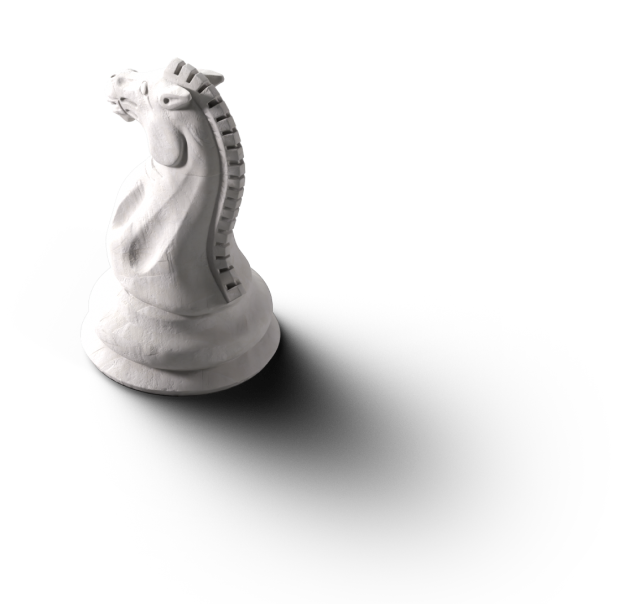

404

Tahtanın 65. karesini arıyorsun.
Satranç tahtası 64 kareyle sınırlıdır. Gitmek istediğin yer tahtanın sınırları dışına taştı veya oyun sırasında kayboldu.
 Tahtaya dön
Tahtaya dön

Satranç tahtası 64 kareyle sınırlıdır. Gitmek istediğin yer tahtanın sınırları dışına taştı veya oyun sırasında kayboldu.